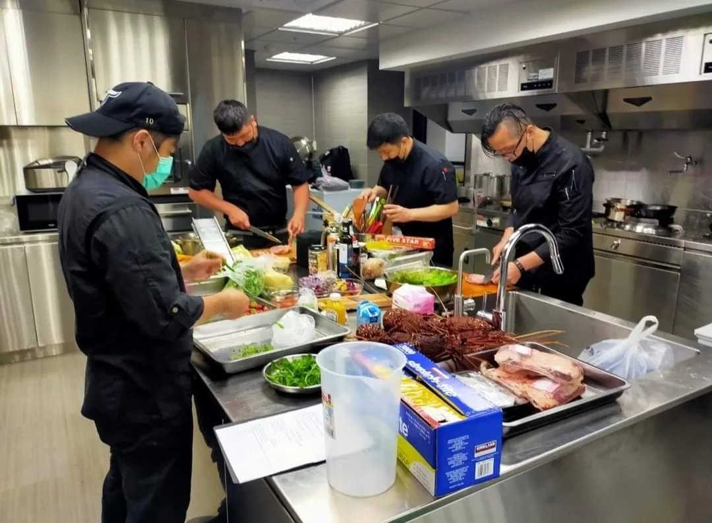

「到府主廚」跟「到府私廚」在市場上經常被交替使用，指的多半是同一種服務——主廚親自到你的場地現場烹調。但用詞背後偶爾也隱含不同的服務定位，值得先弄清楚。
「主廚」強調的是烹調者的專業身份，「私廚」則更強調服務的私人性與客製化程度。實務上多數業者會兩種說法並用，重點還是要看實際提供的服務內容，而不是名稱本身。
不論對方自稱到府主廚或到府私廚，建議直接確認：是否包含菜單設計、是否現場烹調、人力配置多少人、是否包含餐具與擺盤器材，這些才是決定服務品質的實際內容。
舒苑提供的是完整的到府私廚服務，從菜單設計、食材採購到現場烹調與擺盤，全程由主廚團隊親自執行，可以參考到府私廚服務頁面了解完整流程。
如果你對到府主廚跟到府私廚的差異還有疑問，歡迎直接聯繫舒苑團隊，會有專人依你的實際需求提供更詳細的說明與建議。
提供活動日期、人數與場地，我們將提供最適合的私廚方案與報價建議。